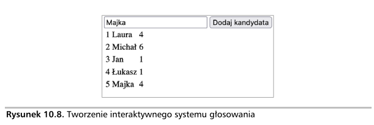

Kod przedstawiony w tym projekcie powoduje utworzenie dynamicznej listy osób, które można klikać. Kliknięcie osoby spowoduje uaktualnienie przypisanej jej wartości określającej liczbę kliknięć (zobacz rysunek 10.8). Strona zawiera również puste pole pozwalające na dodawanie kolejnych osób do listy. Każda nowo dodana osoba również będzie mogła być klikana, podobnie jak osoby umieszczone domyślnie na liście.

Przedstawiony tutaj kod HTML wykorzystaj jako szablon, a utworzony kod
JavaScript z żądaną funkcjonalnością umieść w elemencie
<script>.
Wykonaj wymienione tutaj kroki:
forEach() pobierz wszystkie elementy tablicy i
umieść je na stronie. Użyj wartości 0 jako domyślnej liczby głosów,
ponieważ na początku każdy z kandydatów nie powinien mieć żadnych
głosów.